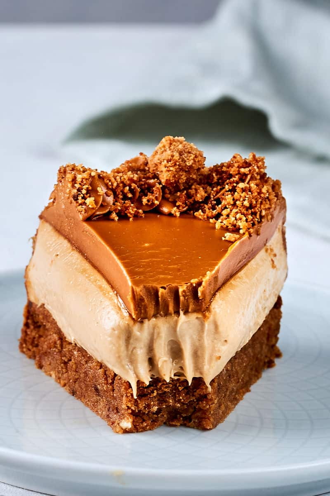

Biscoff CheeseCake:
In order to make this, you will need the following ingridents:
- 2 1/2 cups of Creamcheese
- 1 cup Biscoff spread
- 1/4 cup of Sugar
- 1 1/4 cup of Heavy Whipping Cream
- 250g of Biscoff cookies
- 6 tablespoons of Unsalted Butter
Once you have all these, we can begin!
-
In a mixing bowl, combine your crushed Biscoff
cookies with melted vegan butter and mix until combined.
Transfer into the lined springform pan and refrigerate.
-
In a large mixing bowl, add the softened cream cheese with the superfine sugar and beat until smooth and fluffy.
Add in the Biscoff spread and beat until combined.
Add the double cream and continue to beat until it stabilizes and thickens.
-
Transfer the filling onto the crust and refrigerate overnight.
-
Once firm, melt your Biscoff spread and pour over the top of the cheesecake.
Sprinkle the edges with extra crushed cookies and refrigerate for a further 30 minutes, to firm up.
And thats it, time to enjoy!
